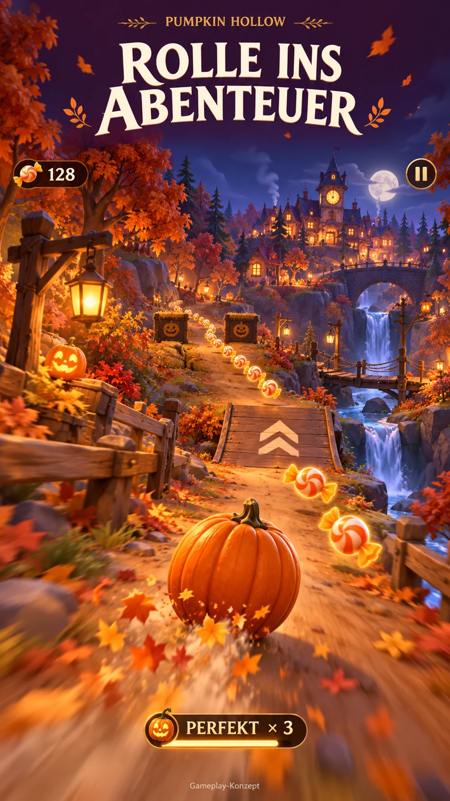
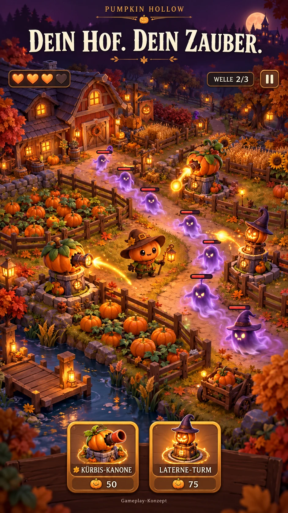

Entdecke Zutaten, Samen und verborgene Rezepte.
Pumpkin Hollow
JETZT BEI GOOGLE PLAY
Wo die Blätter fallen, beginnt die Magie. Entdecke fünf Abenteuer und erwecke ein verwunschenes Dorf zum Leben.
COZY. SPOOKY. FULL OF MAGIC.
Ein kleines Dorf.
Ein großes Abenteuer.
Leuchtende Kürbisse. Knisterndes Laub. Und hinter jedem Nebelschleier ein neues Geheimnis. Willkommen an dem Ort, an dem Halloween zu Hause ist.
5 Abenteuer1 magische WeltDein eigenes Dorf
WÄHLE DEIN ABENTEUER
Jede Runde ein
neuer Zauber.
Fünf Spielideen, verbunden durch eine gemeinsame Geschichte.

01 / 05
PUMPKIN PANIC
Ab ins Laub!
Alles führt zurück zu deinem Dorf ↗Konzeptillustration · Kein aufgenommenes Gameplay
DEIN ORT ZUM ANKOMMEN
Aus einem Funken
wird ein Zuhause.
Im Spiel wächst Pumpkin Hollow mit deinen Abenteuern. Neue Bewohner, warme Lichter und dein ganz persönlicher Kürbishof.
01Sammle kleine Wunder
02Mach das Dorf zu deinem
Repariere den Hof und gestalte dein Herbstparadies.
03Bring die Laternen zum Leuchten
Löse den Fluch und öffne neue Wege in den Wald.

EIN BLICK IN DIE MAGIE
Herbst fürs Herz.
Unsere Designvision zum Vergrößern. Alle Motive sind Konzeptbilder; das Spiel selbst sieht teils anders aus.
GUT ZU WISSEN
Noch neugierig?
Wann kann ich spielen?
Jetzt! Pumpkin Hollow ist für Android bei Google Play erhältlich.
Für welche Geräte gibt es das Spiel?
Für Android, mit Touch-Steuerung im Hochformat. Eine iOS-Version ist geplant.
Zeigen die Bilder das fertige Spiel?
Nein. Die Bilder auf dieser Seite sind Konzeptillustrationen. Echte Screenshots aus dem Spiel findest du bei Google Play.
Gibt es Käufe oder Werbung?
Ja. Das Spiel ist kostenlos, enthält Werbung und bietet optionale Käufe über Google Play. Details stehen in der Datenschutzerklärung.
PUMPKIN HOLLOW
Dein nächstes Abenteuer
trägt Kürbisorange.
Jetzt für Android bei Google Play. Eine iOS-Version ist geplant.
▷
Entdecke die fünf Abenteuer ↑JETZT BEIGoogle Play
◇
GEPLANT FÜRApp Store